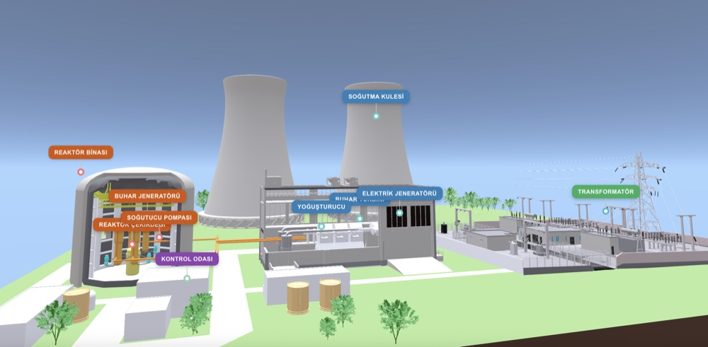

Reactor and hybrid energy systems
I study how small modular reactors (SMRs) and battery energy storage can work together, with an interest in dynamic simulation, plant behavior, and monitoring as demand changes.

Nuclear engineer PhD researcher
I study how we can model, monitor, and protect nuclear and industrial systems. My work brings together reactor technology, instrumentation and control, and machine learning.
Illustrative nuclear power station
About
I'm a PhD researcher and graduate research and teaching assistant at Ontario Tech University. My research asks how we can detect abnormal behavior in safety-critical systems and how we can tell when a detection model is worth trusting.
I studied nuclear engineering and management at Tsinghua University and mechanical engineering at Dokuz Eylül University. At IC İÇTAŞ Industrial, I worked in construction planning and later led cross-functional R&D for the Akkuyu Nuclear Power Plant project. That experience shapes how I think about research, engineering decisions, and project delivery.
Research
I study how small modular reactors (SMRs) and battery energy storage can work together, with an interest in dynamic simulation, plant behavior, and monitoring as demand changes.
I investigate how measurements, control signals, and process behavior can help engineers distinguish ordinary variation from events that warrant investigation.
I evaluate monitoring methods for industrial control systems (ICS), with particular attention to whether benchmark results hold across different recordings and operating conditions.
I study the robustness and explainability of anomaly detectors so engineers can understand what prompts an alert and where the model's evidence is weak.
Selected projects

Education & simulation
A browser-based learning project that helps students connect plant components, energy conversion, and control concepts.
Explore the simulatorMachine learning evaluation
I compare how anomaly detectors respond when assumptions about the quality and independence of data break down.
See the CASCON paperPublications & talks
2026 Conference paper
Mustafa Umut Ozbek, Taiwo Ojo, Pooria Madani, Khalil El-Khatib, and Li Yang.
IEEE CASCON 2026. Compares the robustness of eleven industrial anomaly detectors.
2025 Preprint
Jianghai Li, Mustafa Umut Ozbek, and Boyuan Li.
SSRN preprint. Studies how explainable AI can support anomaly identification in nuclear instrumentation and control.
2024 Conference presentation
Jianghai Li and Mustafa Umut Ozbek.
IAEA International Conference on Nuclear Security (ICONS 2024), Vienna, Austria.
Experience & education
International engagement
Participated in the Youth Leader Fund for a World Without Nuclear Weapons, 2025–2026.
Served as a youth delegate and presented research at ICONS 2024 in Vienna.
Contributed to a project on computer security for radiation detection systems.
Presented on the nuclear construction supply chain at the 2024 industry conference. Conference agenda
Contact
I'm interested in collaborations on nuclear engineering, industrial cybersecurity, and trustworthy AI.